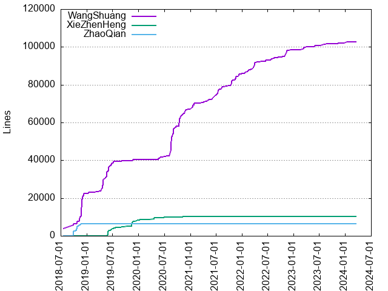

Authors
| Author | Commits (%) | + lines | - lines | First commit | Last commit | Age | Active days | # by commits |
|---|
| WangShuang | 1278 (83.69%) | 102833 | 57432 | 2018-07-17 | 2024-03-18 | 2070 days, 16:50:32 | 430 | 1 |
| XieZhenHeng | 170 (11.13%) | 10116 | 3109 | 2019-05-27 | 2021-08-26 | 821 days, 22:02:13 | 88 | 2 |
| ZhaoQian | 79 (5.17%) | 6485 | 1805 | 2018-09-27 | 2018-11-21 | 54 days, 15:54:22 | 25 | 3 |

| Month | Author | Commits (%) | Next top 5 | Number of authors |
|---|
| 2024-03 | WangShuang | 6 (100.00% of 6) | | 1 |
| 2024-02 | WangShuang | 1 (100.00% of 1) | | 1 |
| 2024-01 | WangShuang | 4 (100.00% of 4) | | 1 |
| 2023-12 | WangShuang | 3 (100.00% of 3) | | 1 |
| 2023-11 | WangShuang | 6 (100.00% of 6) | | 1 |
| 2023-10 | WangShuang | 2 (100.00% of 2) | | 1 |
| 2023-09 | WangShuang | 2 (100.00% of 2) | | 1 |
| 2023-08 | WangShuang | 10 (100.00% of 10) | | 1 |
| 2023-07 | WangShuang | 3 (100.00% of 3) | | 1 |
| 2023-06 | WangShuang | 6 (100.00% of 6) | | 1 |
| 2023-05 | WangShuang | 10 (100.00% of 10) | | 1 |
| 2023-04 | WangShuang | 2 (100.00% of 2) | | 1 |
| 2023-03 | WangShuang | 29 (100.00% of 29) | | 1 |
| 2023-02 | WangShuang | 10 (100.00% of 10) | | 1 |
| 2022-12 | WangShuang | 4 (100.00% of 4) | | 1 |
| 2022-11 | WangShuang | 21 (100.00% of 21) | | 1 |
| 2022-10 | WangShuang | 17 (100.00% of 17) | | 1 |
| 2022-09 | WangShuang | 6 (100.00% of 6) | | 1 |
| 2022-08 | WangShuang | 16 (100.00% of 16) | | 1 |
| 2022-07 | WangShuang | 17 (100.00% of 17) | | 1 |
| 2022-06 | WangShuang | 10 (100.00% of 10) | | 1 |
| 2022-05 | WangShuang | 6 (100.00% of 6) | | 1 |
| 2022-04 | WangShuang | 14 (100.00% of 14) | | 1 |
| 2022-03 | WangShuang | 25 (100.00% of 25) | | 1 |
| 2022-02 | WangShuang | 23 (100.00% of 23) | | 1 |
| 2022-01 | WangShuang | 19 (100.00% of 19) | | 1 |
| 2021-12 | WangShuang | 26 (100.00% of 26) | | 1 |
| 2021-11 | WangShuang | 21 (100.00% of 21) | | 1 |
| 2021-10 | WangShuang | 29 (100.00% of 29) | | 1 |
| 2021-09 | WangShuang | 16 (100.00% of 16) | | 1 |
| 2021-08 | WangShuang | 11 (84.62% of 13) | XieZhenHeng | 2 |
| 2021-07 | WangShuang | 22 (100.00% of 22) | | 1 |
| 2021-06 | WangShuang | 6 (100.00% of 6) | | 1 |
| 2021-05 | WangShuang | 16 (100.00% of 16) | | 1 |
| 2021-04 | WangShuang | 23 (100.00% of 23) | | 1 |
| 2021-03 | WangShuang | 17 (100.00% of 17) | | 1 |
| 2021-02 | WangShuang | 2 (100.00% of 2) | | 1 |
| 2021-01 | WangShuang | 44 (100.00% of 44) | | 1 |
| 2020-12 | WangShuang | 24 (96.00% of 25) | XieZhenHeng | 2 |
| 2020-11 | WangShuang | 37 (97.37% of 38) | XieZhenHeng | 2 |
| 2020-10 | WangShuang | 40 (93.02% of 43) | XieZhenHeng | 2 |
| 2020-09 | WangShuang | 53 (85.48% of 62) | XieZhenHeng | 2 |
| 2020-08 | WangShuang | 71 (89.87% of 79) | XieZhenHeng | 2 |
| 2020-07 | WangShuang | 15 (65.22% of 23) | XieZhenHeng | 2 |
| 2020-06 | WangShuang | 7 (70.00% of 10) | XieZhenHeng | 2 |
| 2020-05 | WangShuang | 8 (80.00% of 10) | XieZhenHeng | 2 |
| 2020-04 | XieZhenHeng | 7 (100.00% of 7) | | 1 |
| 2020-03 | XieZhenHeng | 2 (100.00% of 2) | | 1 |
| 2020-02 | XieZhenHeng | 1 (100.00% of 1) | | 1 |
| 2020-01 | XieZhenHeng | 9 (90.00% of 10) | WangShuang | 2 |
| 2019-12 | XieZhenHeng | 18 (81.82% of 22) | WangShuang | 2 |
| 2019-11 | XieZhenHeng | 30 (55.56% of 54) | WangShuang | 2 |
| 2019-10 | XieZhenHeng | 7 (100.00% of 7) | | 1 |
| 2019-09 | XieZhenHeng | 11 (64.71% of 17) | WangShuang | 2 |
| 2019-08 | XieZhenHeng | 5 (55.56% of 9) | WangShuang | 2 |
| 2019-07 | WangShuang | 20 (62.50% of 32) | XieZhenHeng | 2 |
| 2019-06 | WangShuang | 92 (85.19% of 108) | XieZhenHeng | 2 |
| 2019-05 | WangShuang | 86 (85.15% of 101) | XieZhenHeng | 2 |
| 2019-04 | WangShuang | 38 (100.00% of 38) | | 1 |
| 2019-03 | WangShuang | 15 (100.00% of 15) | | 1 |
| 2019-02 | WangShuang | 4 (100.00% of 4) | | 1 |
| 2019-01 | WangShuang | 21 (100.00% of 21) | | 1 |
| 2018-12 | WangShuang | 38 (100.00% of 38) | | 1 |
| 2018-11 | WangShuang | 96 (72.18% of 133) | ZhaoQian | 2 |
| 2018-10 | WangShuang | 44 (56.41% of 78) | ZhaoQian | 2 |
| 2018-09 | WangShuang | 21 (72.41% of 29) | ZhaoQian | 2 |
| 2018-07 | WangShuang | 4 (100.00% of 4) | | 1 |
| Year | Author | Commits (%) | Next top 5 | Number of authors |
|---|
| 2024 | WangShuang | 11 (100.00% of 11) | | 1 |
| 2023 | WangShuang | 83 (100.00% of 83) | | 1 |
| 2022 | WangShuang | 178 (100.00% of 178) | | 1 |
| 2021 | WangShuang | 233 (99.15% of 235) | XieZhenHeng | 2 |
| 2020 | WangShuang | 256 (82.58% of 310) | XieZhenHeng | 2 |
| 2019 | WangShuang | 314 (73.36% of 428) | XieZhenHeng | 2 |
| 2018 | WangShuang | 203 (71.99% of 282) | ZhaoQian | 2 |